공조냉동기계산업기사 (2006-03-05 기출문제)
1과목: 공기조화
1. 실내온도 26℃의 사무실에서 일반사무에 종사하고 있는 사람의 발열량으로 가장 적당한 것은 어느 것인가?
- 40kcal/h 100kcal/h
- 20kcal/h 90kcal/h
- 50kcal/h 60kcal/h
- 90kcal/h 30kcal/h
(정답률: 66%)

2. 동일 송풍기에서 회전수를 2배로 했을 경우의 성능의 변화량에 대하여 옳은 것은 어느 것인가?(순서대로 정압, 풍량, 동력)
- 2배, 4배, 8배
- 8배, 4배, 2배
- 4배, 8배, 2배
- 4배, 2배, 8배
(정답률: 62%)
3. 다음 중 환기량의 단위로서 부적당한 것은?
- 환기회수 (회/h)
- 1인당 환기량(m3/hㆍP)
- 단위 시간당 환기량(m3/h)
- 단위 체적당 환기량(m3/hㆍm3)
(정답률: 52%)
4. 급수온도 48℃에서 증기압력 15kg/cm2, 온도 400℃의 증기를 30kg/h 발생시키는 보일러 마력(HP)은 얼마인가? (단, 15kg/cm2, 400℃에서 과열증기 엔탈피는 784.2kcal/kg이다.)
- 1.49
- 1.87
- 2.34
- 2.62
(정답률: 32%)
5. 보일러 튜브내에 스케일(Scale) 생성을 방지하기 위한 방법으로 적절하지 못한 것은?
- 급수처리
- 청정제 주입
- 블로우(blow)
- 연소가스 처리
(정답률: 61%)
6. 공기조화기에서 냉각코일에서의 냉각열량(qc)표시가 바른 것은?
- qc=외기부하+취득열량+재열량
- qc=외기부하+취득열량-재열량
- qc=외기부하-취득열량+재열량
- qc=외기부하-취득열량-재열량
(정답률: 65%)
7. 다음 공기 선도상에서와 같이 온도와 습도가 동시에 변하는경우 틀리는 것은? (단, qs=현열, qL=잠열, i=엔탈피, t=건구온도, Cp=정압비열)
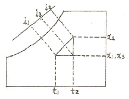
- qs=i3-i1
- qL=i2-i3
- qs=Cp(t2-t1)
- qL=Cp(x2-x1)
(정답률: 52%)
8. 대기의 절대습도가 일정할 때 하루동안의 상대습도 변화를 설명한 것 중 올바른 것은?
- 절대습도가 일정하므로 상대습도의 변화는 없다.
- 낮에는 상대습도가 높아지고 밤에는 상대습도가 낮아진다.
- 낮에는 상대습도가 낮아지고 밤에는 상대습도가 높아진다.
- 낮에는 상대습도가 정해지면 하루종일 그 상태로 일정하게 된다.
(정답률: 84%)
9. 열부하 계산시 적용되는 열관류율(K)에 대한 설명 중 틀리는 것은?
- 열전도와 대류 열전달이 조합된 열전달을 열관류라 한다.
- 단위는 kcal/m2h℃이다.
- 열관류율이 커지면 열부하는 감소한다.
- 고체벽을 사이에 두고 한쪽 유체에서 반대쪽 유체로 이동하는 열량의 척도로 볼 수 있다.
(정답률: 70%)
10. 유량 1500m3/h, 양정이 12m인 펌프의 축동력(kW)은 얼마인가? (단, 물의 비중량 1000kg/m3, 펌프 효율 η=0.7이다.)
- 14.2kW
- 12.1kW
- 38.5kW
- 70.1kW
(정답률: 39%)
11. 보일러ㆍ동체 내부의 중앙 하부에 파형노통이 길이 방향으로 장착되며 이 노통의 하부 좌우에 연관들을 갖춘 보일러는?
- 노통보일러
- 노통연관보일러
- 연관보일러
- 수관보일러
(정답률: 93%)
12. 다음에 열거된 난방 방식 중 타방식에 비해 낮은 실온에서도 균등한 쾌적감을 얻을 수 있는 방식은?
- 복사난방
- 대류난방
- 증기난방
- 온풍로난방
(정답률: 91%)
13. 주방의 환기계획에 대한 설명 중 틀린 것은?
- 인접실에 냄새가 누설되지 않도록 실내 부압으로 한다.
- 환기방식은 제 2종 환기방식으로 한다.
- 기름을 사용하는 후드에는 그리스필터를 설치한다.
- 연기, 취기, 증기 등의 발생이 많은 곳의 후드 면풍속은 0.5m/s 이상으로 한다.
(정답률: 68%)
14. 다음 중 공기조화 설비와 관계가 없는 것은?
- 냉각탑
- 보일러
- 냉동기
- 압력탱크
(정답률: 61%)
15. 어떤 실내의 현열량이 3000kcal/h, 실내온도 25℃, 송풍기 출구온도 15℃일 때 실내 송풍량(m3/h)은? (단, 공기의 비열 0.24kcal/kg℃, 공기의 비중량 1.2kg/m3으로 한다.)
- 1071.43m3/h
- 1061.67m3/h
- 1⑤1.43m3/h
- 1041.67m3/h
(정답률: 59%)
16. 다음 덕트의 풍량조절 댐퍼 중 2개 이상의 날개를 가진 것을 대형덕트에 사용되며 일명 루버댐퍼라고 하는 것은?
- 다익댐퍼
- 스플릿댐퍼
- 단익댐퍼
- 클로드댐퍼
(정답률: 65%)
17. 단일덕트 정풍량 공조방식에서 존에 해당되는 각 실의 부하변동에 대응하기 위하여 ㅟ출온도를 변경시켜 희망하는 설정치로 유지하기 위해 설치하는 것은?
- 댐퍼
- 공기여과기
- 팬코일 유닛
- 말단 재열기
(정답률: 52%)
18. 온열매를 사용하는 공조방식에 대한 설명 중 틀린 것은?(오류 신고가 접수된 문제입니다. 반드시 정답과 해설을 확인하시기 바랍니다.)
- 증기 - 보일러의 물을 가열시켜 증발 잠열을 이용하는 방법으로서, 배관을 통해 열교환기 또는 공조기에 수승되어 방열된 후에 응축ㆍ환수된다.
- 고온수 - 보일러에서 1차측 온수인 고온수를 만들어 열교환기에서 2차측 온수인 중온수로 열교환하여 사용하는 것으로 대단위 플랜트에 많이 이용된다.
- 중온수 - 보일에서 생산된 1차측 온수인 중온수와 유닛을 순환하는 2차측 온수인 저온수를 부하에 따라 혼합하여 순환시키는 것으로 중규모의 아파트 단지 등에서 많이 이용된다.
- 저온수 - 순환수의 온도를 60℃전후로 유지하여 순환시키는 방법으로 다른 열매에 비해 예열부하 및 예열손실이 적다는 장점으로 소규모 건물이나 개인주택의 난방에 많이 이용된다.
(정답률: 52%)
19. 유인 유니트 공조 방식 특징이 아닌 것은?
- 각실 제어가 용이하다.
- 유니트의 여과기가 막히기 쉽다.
- 유니트가 실내의 유효 공간을 감소시킨다.
- 덕트 공간이 비교적 크다.
(정답률: 64%)
20. 유인 유니트 방식의 특징 중 적합하지 않는 것은?
- 중앙공조기는 1차 공기만을 처리한다.
- 전 공기식에 비해 덕트면적이 적다.
- 각 유니트마다 조절할 수 있으므로 각실 조절에 적합하다.
- 동시에 냉방, 온방이 곤란하다.
(정답률: 56%)
2과목: 냉동공학
21. 다음 중 열통과율의 단위는?
- mh℃/kcal
- kcal/mh℃
- kcal/m2h℃
- kcal/h
(정답률: 66%)
22. R12 열교환기에서 고압액과 저압증기가 병류로 흐르고 있을 때 고압액은 입구에서 80℃, 출구에서 6.5℃이고, 저압증기는 입구에서 -20℃, 출구에서 -13.5가 된다면 이때 대수 평균 온도차는 얼마인가?
- -16.7℃
- 43.2℃
- 49.7℃
- 60℃
(정답률: 48%)
23. 슬라이그 밸브 사용으로 무단계 용량제어가 가능한 것은?
- 터보압축기
- 스크류압축기
- 왕복동식압축기
- 스크르압축기
(정답률: 64%)
24. 하루 사용시간이 3시간인 100W 전등 10개와 20시간인 2kW 송풍팬(전동기 효율을 0.85라 한다.) 2대가 설치되어 있는 냉장고의 냉동부하는 몇 kcal/h 인가?
- 40
- 683
- 1793
- 3480
(정답률: 29%)
25. 흡수식 냉동기의 흡수제의 구비조건을 설명한 것이다. 맞는 것은?
- 용액의 증기압이 높을 것
- 농도변화에 의한 증기압의 변화가 작을 것
- 점도가 높을 것
- 재생에 많은 열이 소요될 것
(정답률: 58%)
26. 냉각탑에서의 손실수의 구분에 해당되지 않는 것은?
- 냉각할 때 소비한 증발수량
- 냉각수 상.하부의 온도차
- 탱크내의 불순물의 농도를 증가시키지 않기 위한 보급수량
- 냉각공기와 함께 외부로 비산되는 소비수량
(정답률: 52%)
27. 제빙장치에 주로 사용되며 상부에는 가스헤더가 있고 하부에는 액헤더가 있으며 상하의 헤더사이에는 다수의 구부러진 증발관이 부착되어져 있는 형태의 증발기는?
- 탱크형 증발기
- 보델로트 증발기
- 이중관식 증발기
- 원통다관식 증발기
(정답률: 51%)
28. 다음 그림에서 가역 단열 변화선에 해당하는 것은?
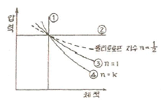
- ①
- ②
- ③
- ④
(정답률: 52%)
29. 수증기를 열원으로 하여 냉방에 적용시킬수 있는 냉동기는 어느 것이 있는가?
- 원심식 냉동기
- 왕복식 냉동기
- 흡수식 냉동기
- 터보식 냉동기
(정답률: 77%)
30. 카르노 사이클에 있어서 고열원 300℃, 사이클당 0.2kcal의 열량을 공급하여 60kgㆍm의 작업을 할 경우 열효율은 얼마인가?
- 0.7
- 0.8
- 0.9
- 1.0
(정답률: 22%)
31. 다음 설명 중 맞는 것은 어느 것인가?
- 공기열원 히트펌프로 난방운전할 때 압축기의 피스톤 토출량이 일정하면 외기온도가 저하해도 난방능력은 일정하다.
- 동력의 단위는 W로 표시하고 일량의 단위는 J로 표시한다.
- 단열압축에서 압축기 입구 및 출구의 냉매 엔탈피는 같다.
- 압력이 일정할 경우 냉매 1kg에 가해지는 열량은 그 엔탈피의 증가량보다 높다.
(정답률: 67%)
32. 압축기의 유압이 올라가지 않는 원인과 관계가 없는 것은?
- 기름의 온도가 너무 높다.
- 압축기의 축봉이 마모되었다.
- 저압이 너무 높다.
- 오일 여과기가 막혀있다.
(정답률: 53%)
33. 2kg/cm2abs의 R-12냉매가 등압변화를 하면서 주위로 부터 Q=25kcal를 공급받았을 때 내부에너지의 변화량은 얼마인가? (단, 변화전의 체적 V1=0.04m3, 변화후의 체적 V2=0.11m3 이다.)
- 21.7kcal
- 20.5kcal
- 19.6kcal
- 18.7kcal
(정답률: 21%)
34. 다음 응축기 중에서 용량이 비교적 크며 열통과율이 가장 좋은 것은?
- 공냉식 응축기
- 7통로식 응축기
- 증발식 응축기
- 입형 셸 엔드 튜브식 응축기
(정답률: 50%)
35. 흡수식 냉동기에 사용되는 냉매는 어느 것인가?
- 염화리튬(LiCl)
- 물
- 프로판(C3H8)
- 에탄(C2H6)
(정답률: 85%)
36. 다음에서 물질 또는 계(系)의 상태를 표시하는 상태량에 속하지 않는 것은 어느 것인가?
- 압력
- 비체적
- 절대온도
- 열량
(정답률: 43%)
37. 다음 중 고압측에 설치하는 장치가 아닌 것은?
- 수액기
- 팽창밸브
- 드라이어
- 액분리기
(정답률: 62%)
38. 냉동장치를 장기간 정지할 경우 주의해야 할 사항에 해당되지 않는 것은?
- 냉동장치를 전체 누설검사하고 누설부위는 보수한다.
- 냉매는 장치내에 잔류시키고 장치의 압력은 진공으로 유지한다.
- 밸브류는 캡을 꼭조여 냉매누설이 없도록 한다.
- 냉각수는 드레인 밸브 또는 플러그를 열러 완전히 배출시킨다.
(정답률: 69%)
39. 냉각탑에 관한 설명 중 옳은 것은?
- 냉각수 펌프를 고양정의 펌프와 교환하면 냉각능력은 저하한다.
- 냉각수 출구온도를 대기의 습구온도 보다 낮게 할 수 없다.
- 물의 증발 현열을 이용한다.
- 기온이 같은 조건에서 습도가 높을 때 출구온도가 낮아진다.
(정답률: 41%)
40. Cl을 함유한 냉매에서 야기되는 구리도금 현상이 일어나기 쉬운 순서대로 나열된 것은?
- R-12 → R-22 → CH3Cl
- R-22 → R-12 → CH3Cl
- CH3Cl → R-22 → R-12
- CH3Cl → R-12 → R-22
(정답률: 43%)
3과목: 배관일반
41. 다음은 배관의 K.S 도시 기호이다. 이중 옳지 않은 것은?
- 고압배관용 탄소강 강관 - SPPH
- 저온배관용 강관 - SPLT
- 수도용 아연도강관 - SPTW
- 일반 구조용 탄소강 강관 - SPS
(정답률: 51%)
42. 관의 보온재로서 구비해야할 조건으로 부적당한 것은?
- 내식성이 클 것
- 흡습율이 적을 것
- 열전도율이 클 것
- 비중이 작고 가벼울 것
(정답률: 81%)
43. 벨로즈형 신축이음쇠의 특징이 아닌 것은?
- 설치 공간을 많이 차지하지 않는다.
- 신축량은 벨로즈의 산수와 피치의 구조에 따라 다르다.
- 장시간 사용시 패킹의 마모로 누수의 원인이 된다.
- 곡선배관 부분에서 각도변위를 흡수한다.
(정답률: 57%)
44. 다음 중 강관 호칭지름의 기준이 되는 것은?
- 파이프의 유효지름
- 파이프의 안지름
- 파이프의 중간지름
- 파이프의 바깥지름
(정답률: 65%)
45. 대변기의 세정급수방식에 대한 다음 설명 중 잘못된 것은?
- 하이탱크식에서 급수탱크의 설치는 변기 상부로부터 보통 1.9m 높이로 한다.
- 로우탱크식은 하이 탱크식보다 다소 물의 사용량이 많고 소음이 크다.
- 세정밸브식에서는 급수관의 관경이 25mm 이상이어야 한다.
- 급수관에 직결해서 세정밸브가 배관된 경우에는 변역류방지용 진공방지기(Vacuum breaker)를 부착한 밸브를 사용해야 한다.
(정답률: 48%)
46.
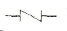
는 다음 어느 밸브에 속하는가?- 체크 밸브
- 글로브 밸브
- 슬루스 밸브
- 앵글 밸브
(정답률: 81%)
47. 다음 중 증기트랩(steam trap)의 종류에 들어가지 않은 것은?
- 버킷 트랩
- 플로트 트랩
- 열동식 트랩
- 그리이스 트랩
(정답률: 65%)
48. 가스관의 설비에 대산 설명 중 옳지 않는 것은?
- 배관은 1/50 이상의 상향구배를 원칙으로 한다.
- 가스관은 전선과 교차하는 곳을 피한다.
- 호수의 길이는 연소기까지 3m 이내로 하되 T형으로 결하지 않는다.
- 가스관의 크기는 유량, 가스 비중, 가스압력, 길아 의해 결정된다.
(정답률: 64%)
49. 온수난방의 보온재로서 부적당한 것은? (단, 관내 흐르는 온수의 온도는 80℃이다.)
- 유리 섬유
- 폼 폴리에틸렌
- 우모 펠트
- 염기성 탄화 마그네슘
(정답률: 60%)
50. 주증기관의 크기와 직접적인 관계가 없는 것은?
- 압력손실
- 팽창탱크
- 증기의 속도
- 증기유량
(정답률: 67%)
51. 암거내에 증기난방 배관 시공을 하고자 할 때 나관(Bapipe)상태라면 관표면에 무엇을 바르는가?
- 시멘트
- 석면
- 테프론 테이프
- 쿨타르
(정답률: 67%)
52. 강관의 나사접합시 주의사항이다. 틀린 것은?
- 파이프커터 보다는 쇠톱으로 관을 절단하는 것이 좋다.
- 나사부의 길이는 필요이상으로 길게 하지 않는다.
- 나사 절삭후 연결부속은 순서적으로 접합하여 필요개소에 분해 가능한 유니온 등을 설치한다.
- 연결부속을 나사부에 끼우기전에 마를 충분히 감아 주는데 좋다.
(정답률: 67%)
53. 스케줄 번호는 다음 중 무엇을 나타내기 위함인가?
- 관의 외경
- 관의 내경
- 관의 두께
- 관의 길이
(정답률: 65%)
54. 배관 부속 중 분기관을 낼 때 사용하는 것은?
- 벤드
- 엘보
- 티이
- 유니온
(정답률: 72%)
55. 그림과 같은 크로스의 치수를 옳게 표기한 것은?
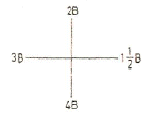
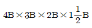
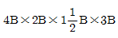
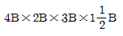
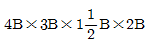
(정답률: 62%)
56. 강관 공작용 공구가 아닌 것은?
- 나사절삭기
- 파이프 커터
- 파이프 리머
- 익스팬더
(정답률: 70%)
57. 배관 금속재료의 부식 억제방법으로 적당치 않은 것은?
- 부식 환경의 처리에 의한 방식법
- 인히비터에 의한 방식법
- 건 방식법
- 전기 방식법
(정답률: 53%)
58. 배관 회로위 환수방식에 있어 역 환수방식이 직접 환수방식보다 우수한 점은 무엇인가?
- 순환펌프의 동력을 줄일 수 있다.
- 배관의 설치 공간을 줄일 수 있다.
- 유량을 균등하게 배분시킬 수 있다.
- 재료를 절약할 수 있다.
(정답률: 83%)
59. 급탄배관내의 압력이 0.7kg/cm2 이면 수주로 몇 m와 같은가?
- 0.7m
- 1.7m
- 7m
- 70m
(정답률: 76%)
60. 다음 중 동관의 장점이 아닌 것은?
- 내식성이 좋다.
- 강관보다 가볍고 취급이 쉽다.
- 동경파손에 강하다.
- 내충격성이 좋다.
(정답률: 70%)
4과목: 전기제어공학
61. 그림과 같은 회로의 합성저항은 몇 Ω 인가?
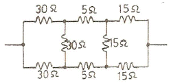
- 25
- 30
- 35
- 50
(정답률: 51%)
62. 그림과 같은 회로도의 논리식은 어떻게 되는가?
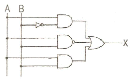
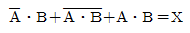
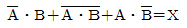
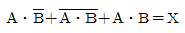
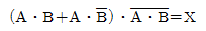
(정답률: 68%)
63. 센서용 검출변환기 중 전압변화용 센서가 아닌 것은?
- 압전형
- 열기전력형
- 광전형
- 전리형
(정답률: 40%)
64. R-C 직렬회로의 임피던스를 나타내는 식은?
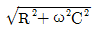
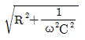
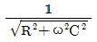
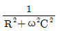
(정답률: 50%)
65. 다음 중 계측기의 제동장치가 될 수 없는 것은?
- 공기제동
- 전자제동
- 와류제동
- 베어링제동
(정답률: 44%)
66. 자동제어계의 안정성의 척도가 되는 양은?
- 감쇠비
- 오차
- 오버 슛(over shoot)
- 지연시간
(정답률: 54%)
67. 단위 S는 무엇을 나타내는 단위인가?
- 컨덕턴스
- 리액턴스
- 자기저항
- 도전률
(정답률: 36%)
68. 유도전동기의 역률을 개선하기 위하여 일반적으로 많이 사용되는 방법은?
- 조상기 병렬접속
- 콘덴서 병렬접속
- 조상기 직렬접속
- 콘덴서 직렬접속
(정답률: 74%)
69. 전류의 화학작용을 이용하지 않은 것은?
- 전기도금
- 전지
- 전해연마
- 형광등
(정답률: 60%)
70. 다음 중 단위계단 함수 u(t)의 그래프는?
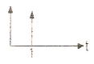
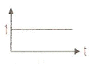
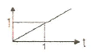
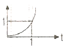
(정답률: 71%)
71. 변압기의 정격 1차전압의 의미를 바르게 설명한 것은?
- 정격 2차전압에 권수비를 곱한 것이다.
- 1/2부하를 걸었을 때의 1차전압이다.
- 무부하일 때의 1차전압이다.
- 정격 2차전압에 효율을 곱한 것이다.
(정답률: 64%)
72. 어떤 제어계통을 부궤환 제어계통으로 만들면 오픈 루프(open loop) 시스템 때보다 루프 이득은 일반적인 경우 어떻게 되는가?
- 불변이다.
- 증가한다.
- 증가하다가 감소한다.
- 감소한다.
(정답률: 43%)
73. 목표값이 임의의 변화에 추종하도록 구성되어 있는 것을 무엇이라 하는가?
- 자동조정
- 추치제어
- 서보기구
- 비율제어
(정답률: 26%)
74. 서보전동기에 대한 설명으로 틀린 것은?
- 정ㆍ역운전이 가능하다.
- 직류용은 없고 교류용만 있다.
- 급가속 및 급감속이 용이하다.
- 속응성이 대단히 높다.
(정답률: 77%)
75. NAND 논리소자에 대한 진리표의 출력을 A에서 D까지 옳게 표현한 것은? (단, L은 Low이고, H는 High 이다.)
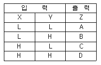
- A=L, B=H, C=H, D=H
- A=L, B=L, C=H, D=H
- A=H, B=H, C=H, D=L
- A=L, B=L, C=L, D=H
(정답률: 50%)
76. 출력 1kW, 효율 80%인 유도전동기의 손실은 몇 W인가?
- 100
- 150
- 200
- 250
(정답률: 24%)
77. PI제어동작은 프로세스제어계의 정상특성 개선에 흔히 사용된다. 이것에 대응하는 보상요소는?
- 동상 보상요소
- 지상 보상요소
- 진상 보상요소
- 지진상 보상요소
(정답률: 74%)
78. 그림은 전동기 속도제어의 한 방법이다. 전동기가 최대 출력을 낼때 다이리스터의 점호각은 몇 rad 이 되는가?
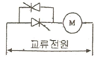
- 0
- π/6
- π/2
- π
(정답률: 60%)
79. 콘덴서만의 회로에서 전압과 전류의 위상관계는?
- 전압이 전류보다 180도 앞선다.
- 전압이 전류보다 180도 뒤진다.
- 전압이 전류보다 90도 앞선다.
- 전압이 전류보다 90도 뒤진다.
(정답률: 64%)
80. 제어계의 입력과 출력이 서로 독립적인 제어계에 해당 되는 것은?
- 피드백제어계
- 자동제어제어계
- 개루프제어계
- 폐루프제어계
(정답률: 53%)